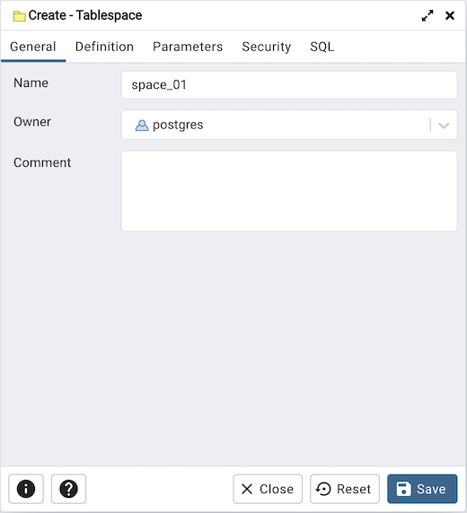
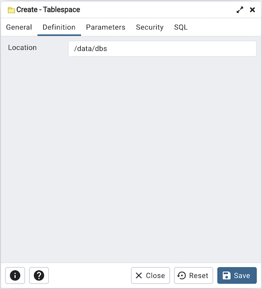
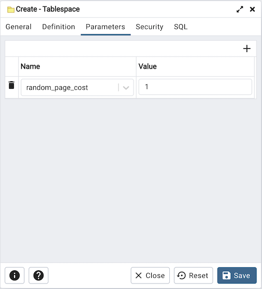
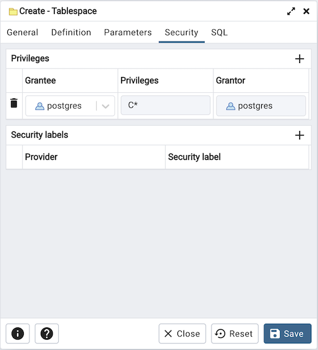
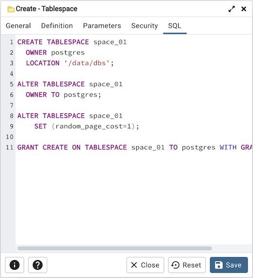

Tablespace Dialog¶
Use The Tablespace dialog to define a tablespace. A tablespace allows superusers to define an alternative location on the file system where the data files containing database objects (such as tables and indexes) reside. Tablespaces are only supported on systems that support symbolic links. Note that a tablespace cannot be used independently of the cluster in which it is defined.
The Tablespace dialog organizes the definition of a tablespace through the following tabs: General, Definition, Parameters, and Security. The SQL tab displays the SQL code generated by dialog selections.
Use the Name field to identify the tablespace with a descriptive name. The name cannot begin with pg_; these names are reserved for system tablespaces.
Select the owner of the tablespace from the drop-down listbox in the Owner field.
Store notes about the tablespace in the Comment field.
Click the Definition tab to continue.
Use the Location field to specify an absolute path to a directory that will contain the tablespace.
Click the Parameters tab to continue.
Use the Parameters tab to set parameters for the tablespace. Click the Add icon (+) to add a row to the table below.
Use the drop-down listbox next to Name to select a parameter.
Use the Value field to set a value for the parameter.
Click the Add icon (+) to specify each additional parameter; to discard a parameter, click the trash icon to the left of the row and confirm deletion in the Delete Row dialog.
Click the Security tab to continue.
Use the Security tab to assign privileges and define security labels for the tablespace.
Use the Privileges panel to assign security privileges. Click the Add icon (+) to assign a set of privileges:
Select the name of the role from the drop-down listbox in the Grantee field.
The current user, who is the default grantor for granting the privilege, is displayed in the Grantor field.
Click inside the Privileges field. Check the boxes to the left of one or more privileges to grant the selected privileges to the specified user.
Click the Add icon to assign additional sets of privileges; to discard a privilege, click the trash icon to the left of the row and confirm deletion in the Delete Row popup.
Use the Security Labels panel to define security labels applied to the tablespace. Click the Add icon (+) to add each security label selection:
Specify a security label provider in the Provider field. The named provider must be loaded and must consent to the proposed labeling operation.
Specify a a security label in the Security Label field. The meaning of a given label is at the discretion of the label provider. PostgreSQL places no restrictions on whether or how a label provider must interpret security labels; it merely provides a mechanism for storing them.
To discard a security label, click the trash icon to the left of the row and confirm deletion in the Delete Row popup.
Click the SQL tab to continue.
Your entries in the Tablespace dialog generate a SQL command (see an example below). Use the SQL tab for review; revisit or switch tabs to make any changes to the SQL command.
Example¶
The following is an example of the sql command generated by user selections in the Tablespace dialog:
The example shown demonstrates creating a tablespace named space_01. It has a random_page_cost value equal to 1.
Click the Info button (i) to access online help.
Click the Save button to save work.
Click the Close button to exit without saving work.
Click the Reset button to restore configuration parameters.